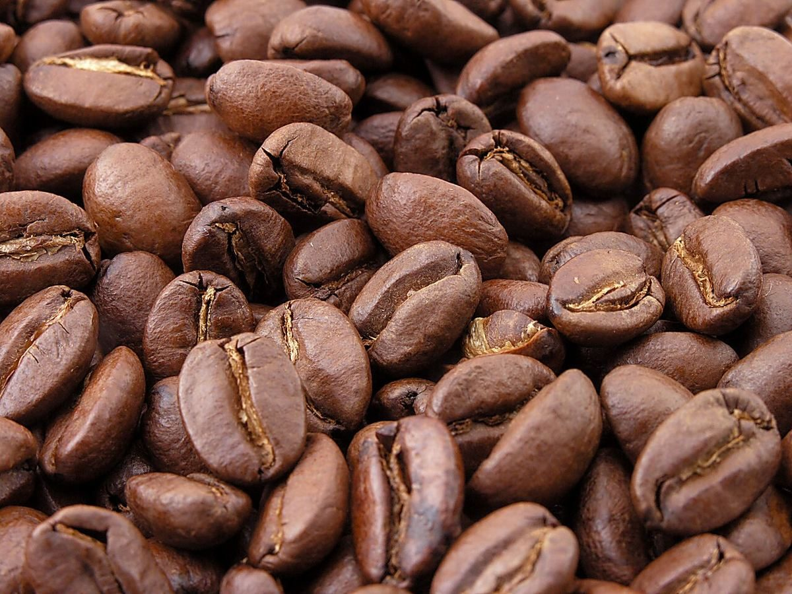

店のこと
店のこと
お店について確認できているのは、所在地とInstagramのアカウントだけです。
このページの「連想」の部分は、制作側が考えたものです。お店の実際の様子・考え・提供内容とは関係がありません。
確認できていること
- 店名は「MARUMOKU COFFEE」、業種はコーヒー店(カフェ)
- 所在地は宮崎県西臼杵郡高千穂町三田井１１４５−１２(〒882-1101)
- 電話番号はなし。連絡はInstagramから
- 営業時間・定休日・メニュー・価格・ご予約・駐車場は準備中


制作側の連想(お店とは無関係)
「MARUMOKU」は、MARU・MOKUと4文字ずつに分けられます。制作側はこの8文字を、8つの丸いボールの直径に当てはめてみました。屋号の意味や由来は分かりませんので、ここでは何も決めつけていません。
| M | 卓球ボール 約40mm |
|---|---|
| A | ゴルフボール 約43mm |
| R | 硬式テニスボール 約67mm |
| U | 硬式野球ボール 約73mm |
| M | ソフトボール 約97mm |
| O | バレーボール 約210mm |
| K | サッカーボール 約220mm |
| U | バスケットボール 約240mm |
直径は一般的な規格のおよその目安です。